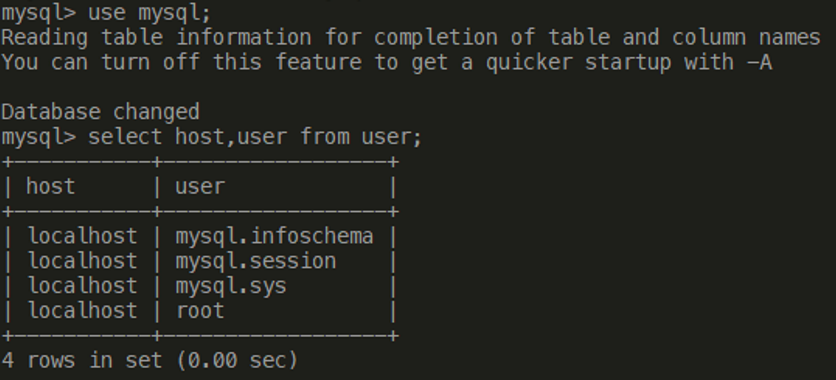
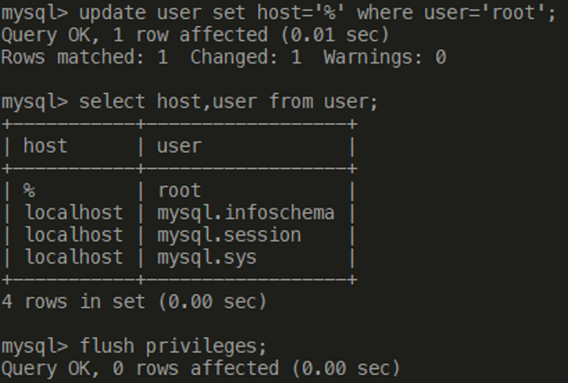
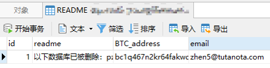

数据库中勒索病毒后的恢复
数据库远程连接失败
中毒现象
一大早接到老师电话，说网站打不开了，让我赶紧修下
起初还没当回事，想着容器重启一下就好了
看到报错信息，数据库突然连不上了
查看访问权限
正常的用户表应该有 “% root” 分别对应 “host user” 这一行的，代表可以远程连接，但是这里没有了

手动添加访问权限
添加访问权限后，可以正常访问了

勒索病毒
数据库访问
登录MySQL一看，11个数据库每个库里只有一张README表，顿时后背一凉，难道是我docker容器重启了一下，数据库是直接恢复出厂设置了不成!!!
勒索信息具体内容
以下数据库已被删除：pzc_activity, pzc_company_info, pzc_customer_info, pzc_foundation, pzc_notice_ws, pzc_order, pzc_partner_info, pzc_pay, pzc_product, pzc_supply_info, pzcauth。 我们有完整的备份。 要恢复它，您必须向我们的比特币地址bc1q467n2kr64fakwdxy436r4mdtam44z966lfz6dc支付0.0095比特币（BTC）。 如果您需要证明，请通过以下电子邮件与我们联系。 zhen5@tutanota.com 。 任何与付款无关的邮件都将被忽略！
数据库恢复
查看binlog文件
docker的mysql容器中的binlog文件在/var/lib/mysql目录
看到binlog文件还在，顿时松了一口气，应该还是能恢复的
不过如果是我写的病毒，一定会把binlog删了，不给恢复的机会
利用binlog恢复数据库
这里设置了恢复的时间段是"2021-10-01 - 2022-01-10"
想着病毒应该是在1月11日删除了数据库，不能把删除的命令一起执行，就恢复到10号的数据
/usr/bin/mysqlbinlog --no-defaults --start-datetime='2021-10-01 00:00:00' --stop-datetime='2022-01-10 00:00:00' binlog.000002 binlog.000003 binlog.000004 | mysql -uroot -p
–no-defaults：读取没有选项的文件
–start-datetime：数据库的起始时间
–stop-datetime： 数据库的终止的时间
master-bin.000001等：要恢复的binlog文件
mysql -u -p：数据库
到此数据库就算恢复完了!
病毒清理
查看命令行历史记录
看到有同学想用服务器(ubuntu系统)爬取其他网站的一些数据
看到第一行，想用pip安装yum，就感觉不太妙，想必对Ubuntu、Centos不太了解
pip install yum
后面是安装了Python环境(给勒索病毒建立温床)
下载了不明来源的爬虫代码在服务器上跑
病毒清理
- 删除了服务器上的病毒文件
- 修改了root账户密码
- 修改了MySQL密码
- 关闭了3306端口
- 删除了Python环境
中毒原因
- 3306端口不应对外开放
- 数据库不应该使用弱密码
- root权限不应随便开放
- 不应下载来路不明的代码文件
- 若无必要不要安装Python(Linux病毒大多是Python写的)
结语
忙活了几个小时，重新把jar包跑起来，后面一切正常
这是那位同学表达歉意送的奶茶